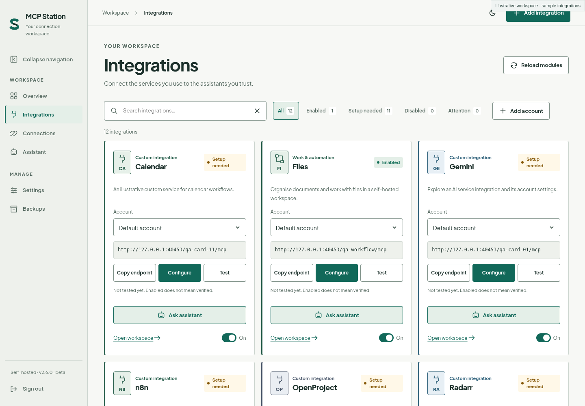

An assistant, with a place to work.
Use the dedicated Assistant or a source-scoped conversation to develop integrations. Bring API documentation, review generated code, and test before enabling.
How the Assistant worksSelf-hosted MCP hub Beta preview
One integration. Multiple accounts. Your local and cloud AI clients.
Give your AI useful tools for the services you already use. Start with a bundled integration or build an API adapter with the assistant, then configure each account and connect your MCP-capable client.
Runs on your server. Connects through the Model Context Protocol.
Connect through an MCP-capable client
Use compatible MCP connection features where available. ChatGPT custom MCP access and actions depend on plan, workspace permissions and supported connection options; Claude requires an available custom connector; LibreChat requires MCP server configuration. Each client must support the station’s transport and authentication, and be able to reach its endpoint. Local models require an MCP-capable client to call tools.
Client names describe connection options, not endorsements or certification. Live end-to-end compatibility has not been verified for this branch.
Useful tools, from the start
Read and send email. Work with files and repositories. Manage infrastructure, tasks and alerts—using the tools and permissions each integration exposes.
Source branch, not the published image. This branch bundles 18 service modules, including eight additions: Gmail, Google Drive, GitHub, Docker Hub, Todoist, Pushover, Proton Pass and Cloudflare. Credentials and service permissions are required; bundled does not mean connected or live-tested. The published 2.7.0_beta image does not include this branch expansion.
For another service, you need a usable API or a purpose-built adapter, authentication and permission to perform each action. This is not universal website automation. Review generated adapters before running them.
A clearer working surface
Choose an account. Check its settings and tools. Connect when you’re ready.

From service to useful tool
Keep the integration code together without mixing the configuration that makes each account yours.
Start with a bundled integration or build a module for your API. Inspect the source and the tools it exposes.
Reuse one source with separate settings and endpoints. New accounts start blank, disabled, and untested—not with copied credentials.
Review the configuration, run the available test, then enable the endpoint. Authorize your compatible client for the account you selected.
Shared source, shared responsibility. Editing or reloading integration code affects all of its accounts. Separate settings are not process isolation.
A station to work from
Less switching between configuration, source code, and conversation. More context for the next useful step.
Use the dedicated Assistant or a source-scoped conversation to develop integrations. Bring API documentation, review generated code, and test before enabling.
How the Assistant worksSee calls, errors, and latency from completed authenticated tool calls. Bounded operational metadata—not invented activity, full audit logs, or provider cost tracking.
What usage measuresSelf-host with Docker and persistent storage. Install the web app where your browser supports it over HTTPS. It’s a PWA, not a native desktop app or offline access to private content.
Plan your setupControl starts with clarity
Keep the station on infrastructure you control. Be deliberate about the code you run and the context you share.
Read the account boundariesStart with a separate evaluation
Pull the published beta, then follow the full guide for credentials, persistent storage, and networking. A pull downloads the image; it does not start the station.
Open the full installation guidedocker pull dbzocchi/mcp-station:2.7.0_betaBefore evaluating: back up your station and use separate data, module, and Files volumes. Do not point the beta at your production state.
Stable 2.4: the established interface. Published beta 2.7: Docker tag 2.7.0_beta (internal app label 2.6.0-beta). This branch: 18 bundled service modules plus later product and navigation refinements, not all in the beta image.